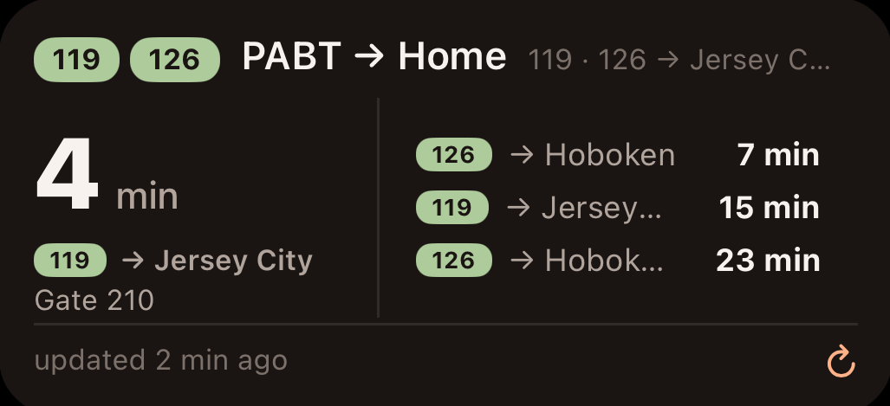
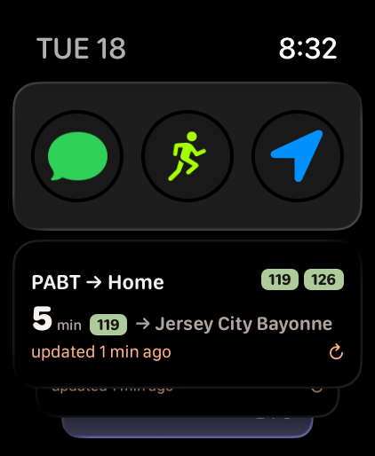
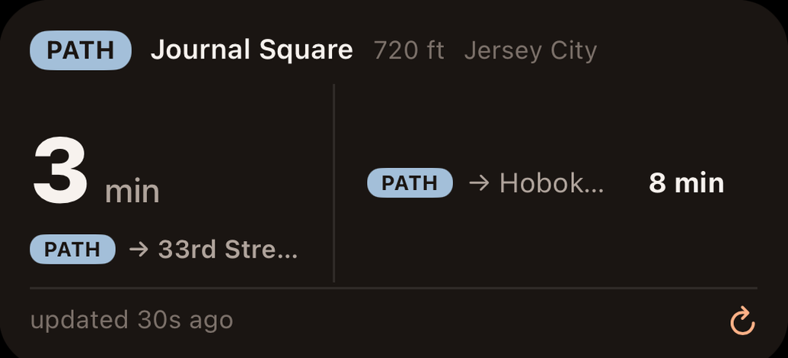
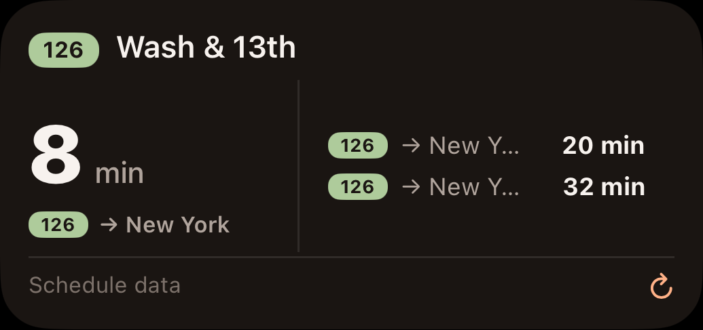
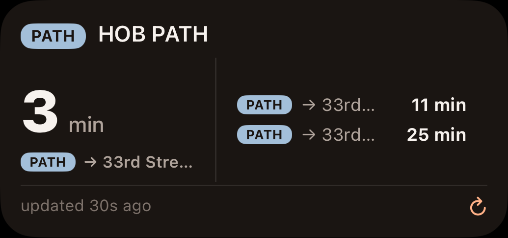
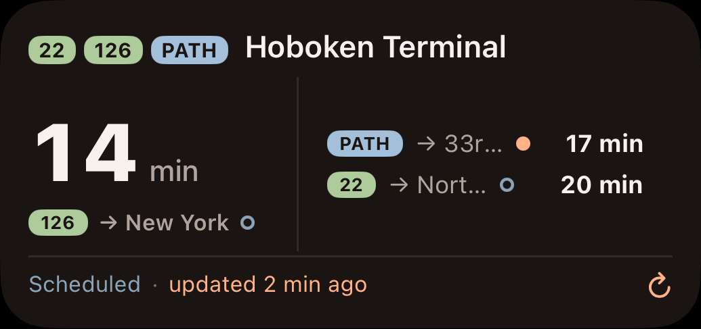
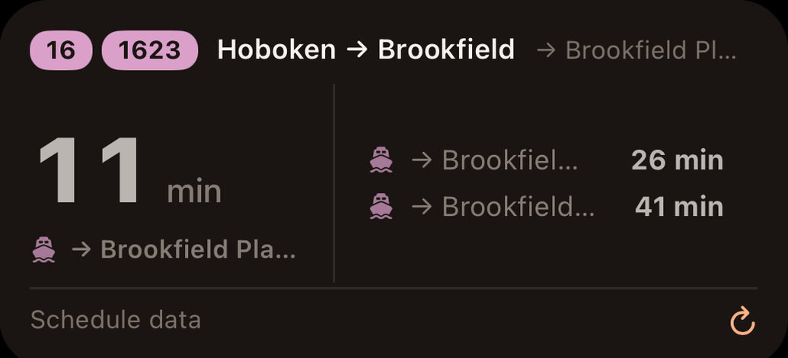

StopSpotter
StopSpotter
When is the next one?
Right on your Home Screen.
An independent app for NJ Transit bus, rail and light rail, PATH and NY Waterway ferries — on your Home Screen and your Apple Watch.

Download on the App StoreFree · no account · no ads
One place
Your whole commute in one app.
A trip that touches a bus and a train means more than one app today — and more than one place to look even inside them, because operators and modes get filed separately. StopSpotter doesn't file them separately. Every operator and mode it supports lives in one index, so one search reaches all of it and mode arrives as a tag on the result rather than a choice you make first.
A bus stop, a PATH station and a ferry terminal turn up in the same search and sit side by side in Saved. You stop keeping a mental map of which app knows about which part of your journey.
- 126Bus
- NECRail
- RVLLight rail
- PATHPATH trains
- NY Waterway ferries
![One Saved list carrying four modes at once: chips for Bus,
Rail, PATH and Ferry above a 126 bus combo with buses to New York now and in 2 minutes,
updated a minute ago; a PATH combo to the World Trade Center in 3 minutes; a rail combo at
Newark Penn Station whose NJCL rows carry Gate 1 and Gate 2 and read Now and 3 minutes; and
a NY Waterway ferry combo from Hoboken to Brookfield Place, each row led by the violet
ferry glyph and carrying no route number, with boats in 1 and 3 minutes, updated just
now.](img/saved-modes.png)
Never a dead end
There is always an answer.
Real-time feeds go down. Timetables don't. StopSpotter carries both, so an answer is always on screen — and the footer tells you which kind you're reading and how much to trust it. You never have to open something else to find out when the next one is meant to leave.
- Live
updated 1 min ago
A live prediction from the agency, stamped with the moment it arrived. If that stamp grows older, a tap of the refresh button fetches the latest.
- Timetable
Schedule data
The published timetable, built into the app — no network needed. You'll see it whenever there's no live prediction to show. It means: this is the timetable, not a prediction.
The labelling isn't a disclaimer. It's the difference between a number you can plan around and a number worth double-checking.
Inside the app
Find it once. Then just glance.
Not a widget with an app bolted on. Search any stop in the system, save the routes and direction you actually take — and from then on the answer is one glance away, on your phone and on your wrist.
One search reaches every mode.
NJ Transit bus, rail and light rail, PATH and NY Waterway ferries sit in one index, so you type once and the mode arrives as a tag on the result rather than a choice you make first. Open it somewhere unfamiliar and the stops around you are already on the map, closest first, with the next departures underneath.

Your routes, your direction, your name for it.
Pick the routes you care about and which way you're going, then call it whatever you like. One saved combo can watch several routes at once — the 119 and the 126, whichever comes first. Everything you save lands on one page, every agency and every mode together, times on the card.

Your stops on Apple Watch.
The watch app lists every combo you've saved, with live times and the same freshness line the phone shows. It's part of the free app. Smart Stack cards go a step further and put a stop one crown-scroll from the watch face — pointing a card at a saved combo is the StopSpotter+ part, the same as on the Home Screen.

A Smart Stack card, one crown-scroll from the watch face.
The nearest stop, nothing to set up.
Every rider gets a widget showing whichever stop you're nearest to. No purchase, nothing to configure and nothing to pick — it's there for the trip you didn't plan, when you're somewhere unfamiliar and have no saved stop to check.

Everything above is included free
StopSpotter+
All your stops on the Home Screen — as many as you like, stacked in one spot you swipe through.
On Apple Watch too: your saved combos as Smart Stack cards.
StopSpotter+
All your stops. One spot.
The free widget answers the question you didn't plan for — somewhere unfamiliar, what's leaving from the nearest stop. StopSpotter+ answers the one you have every day: the stops you picked and named, each on its own widget, gathered into one spot you swipe through. Not the nearest stop. Your stops.




One widget per saved stop — stack them and swipe through.
Pricing
One app, one optional purchase.
Free
$0
Search every stop, every mode. Save your routes. Live times on iPhone and Apple Watch.
StopSpotter+
$2.99 once
Widgets for your saved stops — Home Screen and watch. Buy once, own it.
No subscription. Purchases are handled by Apple through the App Store, and are restorable on your other devices. iPhone with iOS 26.2 or later, and Apple Watch.
Never wonder when the next one is.
Download on the App StoreFree · iPhone